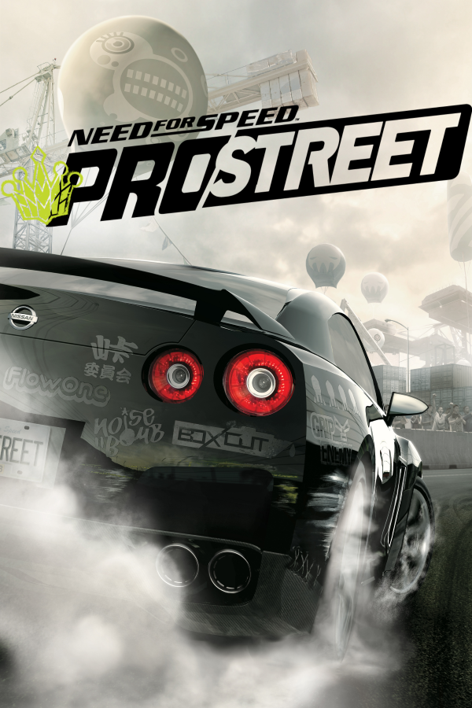

|  | |
| Playtime | Not Played |
| Last Activity | Never |
| Added | 5/7/2025 2:52:52 |
| Modified | 5/7/2025 3:58:19 |
| Completion Status | Not Played |
| Library | Playnite |
| Source | Steam |
| Platform | $PC (Windows) |
| Release Date | 10/26/2007 |
| Community Score | |
| Critic Score | 68 |
| User Score | |
| Genre | Racing |
| Developer | EA Black Box |
| Publisher | Electronic Arts |
| Feature | Multiplayer Single Player |
| Links | Wikipedia |
| Tag | [HLTB] 10 to 20 hours [People] composer: Junkie XL |
Need for Speed: ProStreet is a 2007 racing video game developed by EA Black Box and published by Electronic Arts. It is the eleventh installment in the Need for Speed series and a follow-up to Need for Speed: Carbon (2006). Unlike its immediate predecessors, which focused on the contemporary illegal street racing scene, ProStreet focuses on legal circuit races that take place on closed tracks. The game blends elements of both sim and arcade racing games, requiring players to customize and tune cars for various race modes. Most races take place in real-world locations such as the Portland International Raceway, Mondello Park, and Autopolis.
Developed over the course of almost two years, ProStreet was conceived by the same team who led the production of Need for Speed: Most Wanted. It is the first Need for Speed game that was primarily developed for high-definition consoles such as the Xbox 360 and PlayStation 3, although versions for Microsoft Windows, PlayStation 2, and Wii were also released. The game features a new physics engine, which allows cars to handle in a more realistic way and take damage in accidents, and introduced a wind tunnel feature where players can see how their car's aerodynamics work. Musician Junkie XL was hired to compose the score of the game. Several downloadable content packs were released for the game, expanding its content with more cars, tracks, and races.
ProStreet received mixed reviews from critics, who generally criticized the lack of open world gameplay of its predecessors. The game's numerous online features and car customization options were highlighted as some of its strongest features. Although ProStreet sold more than five million units worldwide, it did not meet sales expectations according to Electronic Arts. Portable adaptations for mobile phones, Nintendo DS, and PlayStation Portable were released to varying success. These differ greatly from their console and PC counterparts, offering simpler gameplay mechanics and a reduced amount of features. ProStreet was succeeded by Need for Speed: Undercover (2008).
Need for Speed: ProStreet is a racing game where the player must tune and drive cars on various race tracks. Although it is an arcade racing game, cars handle in a more realistic way than in previous Need for Speed games. The player assumes the role of Ryan Cooper, a former street racer who enters a series of showdown events run by several racing organizations. Each event comprises a number of races where the player must compete against computer-controlled opponents to earn points and cash. Points allow the player to unlock more challenging events and progress through the game, while cash can be used to purchase or upgrade cars. The overall objective of the game is to ultimately confront a number of elite drivers called Kings. By individually beating every King, Cooper will be crowned the Street King.
The game features four race modes: Grip, Drag, Drift, and Speed. Grip races involve the player racing around a circuit over several laps, where the win condition depends on four variations. These include crossing the finish line in the first position or ahead of a class of drivers based on their car performance, recording the best lap time, and recording the best sector times, with each sector representing a section of the circuit. In Drag, the player must be the first to cross a finish line on a short and straight course, changing gears manually. Some also require the player to perform long wheelies. Drag races always start out with a mini-game where the player can gain a good starting grip by heating up car tires while in braked position. Drift races require the player to score points by drifting around bends, while Speed races involve the player maintaining very high speeds on a relatively straight point-to-point course. The win condition of Speed races depends on two variants, which include crossing the finish line in the first position or reaching the highest speed at designated checkpoints. Most races take place in real-world locations such as Texas World Speedway, Portland International Raceway, Mondello Park, and Autopolis.
ProStreet features a large number of cars, ranging from affordable tuner-friendly sedans to exotic cars. Each car can be highly customized, including its performance, handling, and appearance. Body modifications such as spoilers and hoods affect the car's aerodynamics and can be sculpted accordingly. Cars and aftermarket parts are grouped into four tiers that represent performance levels, which are gradually unlocked as the player progresses through the game. Each car can have a maximum of three blueprints associated with it, with each blueprint representing a different customization. Choosing and tuning the right car for the right race mode is critical to complete the game. For example, Grip races favour cars with fast acceleration and strong drag force, while Speed races favour cars with high top speeds and stability. Cars can be damaged or completely totalled in accidents, and the player must often repair them with cash or by using repair markers, which can be awarded in events or bought separately.
In addition to the game's main career mode, ProStreet features a number of predefined and stand-alone events where the player can race against computer-controlled opponents on any track without the consequences of having to spend cash to repair cars. They also serve as social areas for multiple players to compete online or via split screen. Each event has its own leaderboard, allowing the player to compare their records against top players. Although a variety of pre-tuned cars are available for each event, players also have the option to race with their custom cars from the game's career mode. Players may also create their own custom events. Options such as the location, type, and the number of races, as well as the difficulty of computer-controlled opponents and the number of repair markers available, can be individually configured. Both custom events and car blueprints can be shared with other players. Once a blueprint is shared with another player, it can no longer be modified because the records associated with it are tracked on leaderboards. Private leaderboards are automatically created for each custom event that is shared.
ProStreet was developed by EA Black Box as a follow-up to Need for Speed: Carbon. Unlike its immediate predecessors, which focused on the contemporary illegal street racing scene, ProStreet was conceived as an interpretation of where the culture was heading. After spending a lot of time familiarizing with the scene, Black Box came to the conclusion that the culture was moving away from the streets and getting more organized because the penalties for street racing were too harsh. This resulted in a stronger emphasis on car performance and driving skills, without external factors such as traffic and police chases. According to producer Andrew Hahn, the main idea for the game was to deliver "the ultimate proving ground". Development of the game started in early 2006 by the same team who led the production of Need for Speed: Most Wanted. The development team was initially composed of 20 people, who did not work on Carbon, but gradually grew to over 100 people by June 2007.
ProStreet is the first Need for Speed game that was primarily developed for high-definition consoles such as the Xbox 360 and PlayStation 3. As a result, the development team had to strip down graphical features to make it run on less powerful hardware such as the PlayStation 2 and Wii. This was the reverse process of what the team used to do with previous games, which were primarily developed for the PlayStation 2 and original Xbox and then ported up to their successors with higher fidelity. The game's near two-year development cycle gave developers time to create technologies for the car damage system and smoke effects. A new physics engine was specifically built for the game, which required a physics team to collect real data from the Porsche test track in Leipzig, Germany. Although cars behave in a realistic way, visual aids and systems such as anti-lock braking, stability management, and traction control, which can optionally be turned on, were developed to make the game accessible to players who are not racing enthusiasts. Because the game features licensed cars that can be completely totaled in accidents, full damage and customization had to be signed off by their manufacturers.
An audio team of 12 people spent several months auditioning cars to record the loud sound effects the game required. Ultimately, racing cars without mufflers, such as the Chevrolet Corvette C6.R, the Cadillac CTS-V, and the Dodge Viper, were considered the best choice. Although car engines, turbochargers, and tire skids were individually recorded from real cars, sounds effects such as whooshes and crashes are synthetic. For example, crashes were recorded in multiple layers, combining car drops from cranes and metal hits in the studio, and then edited in post-production. Because the Nissan GT-R featured in the game was not yet out on the market, its sound effects were created from other car recordings. A new crash audio system was built to support the game's real-time damage modelling feature, allowing car parts to sound different when taking damage. Seven surface types were also modelled, resulting in collisions sounding different depending on the surface players hit, even if they hit it in the exact same way.
The game's Auto-sculpt system, which was introduced in Carbon as a visual customization option, allowing players to sculpt body parts of their car, was improved so it affects the car's performance. This was complemented with a wind tunnel feature, which allows players to see how their car's aerodynamics work. Artificial intelligence was made more aggressive, allowing computer-controlled opponents to crash cars in accidents. Online features were expanded and improved with asynchronous gameplay, allowing players to compete with each other without being online at the same exact time. Australian model and former Big Brother contestant Krystal Forscutt, as well as Japanese model Sayoko Ohashi, was hired to appear as one of the game's flag girls. The promotional shots and video footage to capture Forscutt's animations were done in four days. Although musician Junkie XL was hired to compose the score of the game, ProStreet features a large number of songs from international artists. Junkie XL worked closely with the developers to make the score fully interactive and match the style of the licensed tracks, which ranges from electronic rock to electroclash, punk rock, and dance-punk.
Although the game's title was leaked by Russian distributor Soft Club in February 2007, ProStreet was officially announced on May 31. The game was then presented at E3 2007, receiving a nomination for Best Racing Game at the Game Critics Awards. A playable demonstration of the game was showcased at the Games Convention in August, while an in-game single by Junkie XL, entitled "More", was digitally released on September 25, serving as a lead-up to his 2008 album Booming Back at You. Shortly before the game was released, a demo was made available for download on Xbox Live and PlayStation Network, and on the Internet for Microsoft Windows users. In the United Kingdom, advertisements for the game appeared on The Sun's Page 3 site, featuring topless models posing with a Ferrari. Publisher Electronic Arts later removed the material, claiming that it "slipped" through their proper approval process.
ProStreet was released for PlayStation 3, Xbox 360, Microsoft Windows, PlayStation 2, and Wii in North America on November 14, 2007. In Europe, the game was released for Xbox 360, PlayStation 3, Microsoft Windows, and PlayStation 2 on November 23, and for Wii on November 30. Multiple downloadable content packs for the game were released between November 2007 and February 2008 on Xbox Live and PlayStation Network. These expand the game with new cars, tracks, and career mode races. Notable cars include the Lamborghini Murciélago LP640, the Porsche Cayman S, the Shelby GT500, the McLaren F1, and the Bugatti Veyron 16.4, while the new tracks are the Leipzig Test Track and the Shuto Expressway. One of the updates caused technical issues such as freezes and crashes in the Microsoft Windows and PlayStation 3 versions. All of the game's online features were discontinued in April 2012.
ProStreet received mixed reviews from critics according to review aggregator Metacritic. GameSpot described ProStreet as a solid racing game, but remarked that it misses most of the features that made its predecessors interesting. IGN agreed, stating that the game lacks extra features outside of the races themselves, especially when compared to the open world aspect and police chases of previous Need for Speed games. Other publications were more positive towards the game. GamePro praised ProStreet for its high-definition graphics, solid online features, and rewarding career mode, while 1Up.com highlighted the game's sense of realism due to its new physics engine. The PlayStation 2 and Wii versions were considered inferior to their PlayStation 3 and Xbox 360 counterparts due to their lack of online features, while the Microsoft Windows version was criticized for running poorly on high graphic settings and for lacking online players.
The game's visuals were generally well received, although the PlayStation 2 and Wii versions were criticized for their notable aliasing. 1Up.com noted the game's gritty and realistic style, stating that racing through the game's depiction of the Nevada desert feels very authentic. GameRevolution praised the smooth graphics, but remarked that the lack of elaborate cityscapes makes the track environments less interesting than those of its predecessors. GameSpot highlighted the detailed car models, especially when they are damaged, while Edge felt that the event meetings between races give the game a suitable atmosphere. However, the game's announcers annoyed some critics. According to GameSpot, they are poorly voiced, have a bad script, yell into the microphone, insist on calling the players by their names every time they refer to them (which is hundreds of times over the course of the game), and it becomes annoying the whole time.
The fact that ProStreet combines elements of both simulation and arcade racing games confused some critics. GameRevolution felt that the game's navigation aids were too distracting and unintuitive, while IGN remarked that the driving physics were not realistic enough, stating that cars feel very reluctant to want to turn. In contrast, 1Up.com highly praised the new physics engine because more variables come into play, giving the game much more depth. Nintendo Life remarked that, while the motion controls of the Wii version worked well, they were not as responsive as those of Nintendo's Excite Truck. Some critics found the gameplay to be very repetitive, especially during Drag races. Eurogamer explained that each involves completing several rounds of heating up car tires before starting a race that only lasts for a few seconds, resulting in players losing interest quickly. The car customization options and new Auto-sculpt system were credited for giving the game a lot of depth.
The Xbox 360 version was condemned for its monetization practices, which allow players to alternatively upgrade and purchase cars with Microsoft Points instead of in-game cash. The fact that Microsoft Points also give players the ability to purchase any car at any point in the game's career mode was criticized for unbalancing the game mechanics, as it allows players to easily complete early courses with more powerful cars. The online features were highlighted as one of the best aspects of ProStreet. Critics noted that the flexibility of options, leaderboard system, as well as the ability to create events and share blueprints, make the game a highly social experience. Asynchronous multiplayer events were equally praised, as they allow players to compete without having to worry about time zone differences.
During the 11th Annual Interactive Achievement Awards, Need for Speed: ProStreet received nominations for "Racing Game of the Year" and "Outstanding Achievement in Sound Design" by the Academy of Interactive Arts & Sciences.
In February 2008, Electronic Arts reported that ProStreet had sold 5.5 million copies worldwide and that 65% of these were sold out of North America. In the United Kingdom, the game debuted at number two in the all formats charts, behind Assassin's Creed. The PlayStation 2 version received a "Platinum" sales award from the Entertainment and Leisure Software Publishers Association, indicating sales of at least 300,000 copies in the United Kingdom. As of October 2009, the game had sold 2.4 million copies in the United States according to The NPD Group. Although ProStreet performed well internationally, EA Games president Frank Gibeau remarked that it did not meet sales expectations, stating that the game was a major departure from the tuner culture and police evasion aspects consumers expected, and promised that the Need for Speed series would go back to its roots with subsequent games.
ProStreet was adapted for mobile phones and handheld game consoles. These adaptations differ greatly from their console and computer counterparts, offering simpler gameplay mechanics and a reduced amount of features. The mobile edition, which was developed by IronMonkey Studios, was released by EA Mobile in Europe and North America in October 2007. The gameplay involves the player drifting around corners as their car automatically modulates its speed on a track. By successfully drifting, the player gains nitrous oxide, which can then be used to boost the car's speed on straights. Drifting also awards the player with cash, which can be spent on upgrading a car's performance or purchasing a new one. To progress through the game, the player must complete three events comprising three races each. Completing an event gives the player a code that can be used to unlock features in the console and computer editions of the game.
An adaptation for the Nintendo DS was developed by Exient Entertainment and released in 2007 (in North America on November 14, and in Europe on November 23). In addition to the game's four race modes, the Nintendo DS adaptation includes a rhythm mini-game where players must show off their car's hydraulics system by tapping buttons to the beat of a song. The game features a multiplayer mode that allows up to eight players to compete against each other via a single-cartridge Download Play session or a multi-cartridge Wireless LAN connection. In Download Play mode, every player must drive the same car as the host. The game also supports online play for up to four players via the Nintendo Wi-Fi Connection service. Critical reception was slightly more positive than that of its console and computer counterparts, with IGN describing the game as a successful conversion for Nintendo DS standards.
An adaptation for the PlayStation Portable was released in North America and Europe in February 2008. Unlike previous ProStreet releases, the PlayStation Portable edition has no backstory and features six race modes. These include Circuit and Sprint, which involve the player racing around a circuit over several laps or on a point-to-point course, Lap KO and Gate KO, which are races where the last player is eliminated at the end of each lap or a designated checkpoint, Time Attack, which requires the player to reach the finish line before a timer runs out, and Speed Trap, where the player must accumulate the fastest cumulative speed at designated checkpoints. The game introduces an assist tool called Driver Intuition, which temporarily gives players an acceleration and traction boost if they keep their car on an ideal driving path. A multiplayer mode is also included, allowing players to compete against each other online or wirelessly via ad hoc. Critical reception for the PlayStation Portable adaptation was more negative, with journalists criticizing its substandard controls and generic race modes.